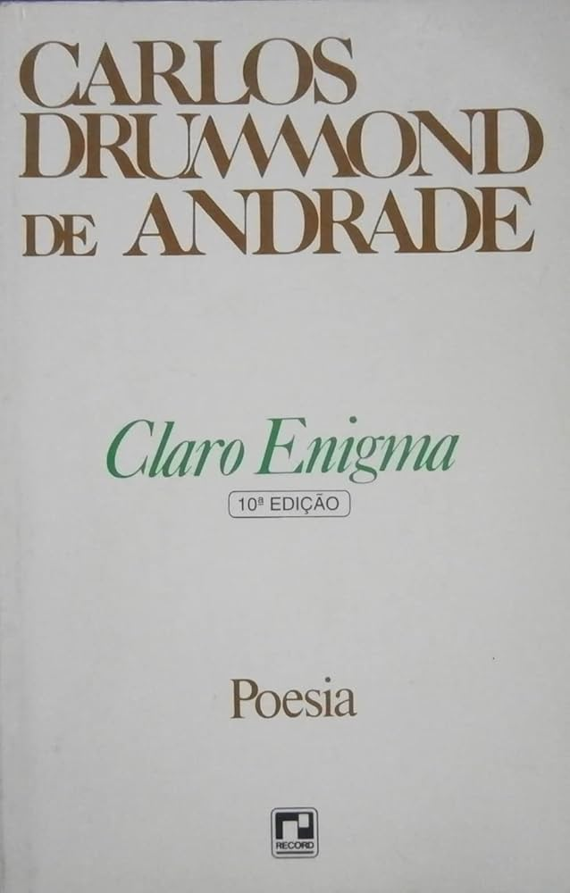

Claro Enigma

"Claro Enigma", de Carlos Drummond de Andrade, publicado em 1951, é uma obra poética que explora a angústia existencial e as complexidades da condição humana. Os poemas refletem sobre a busca por sentido na vida, o confronto com as incertezas e os paradoxos da existência. Com uma linguagem mais livre e introspectiva, Drummond questiona as certezas e valores da sociedade, destacando a tensão entre a clareza das palavras e os enigmas da vida. A obra é uma reflexão profunda sobre o Brasil e o mundo pós-guerra, marcada por uma crise de identidade e a busca constante por respostas para o sentido da vida.